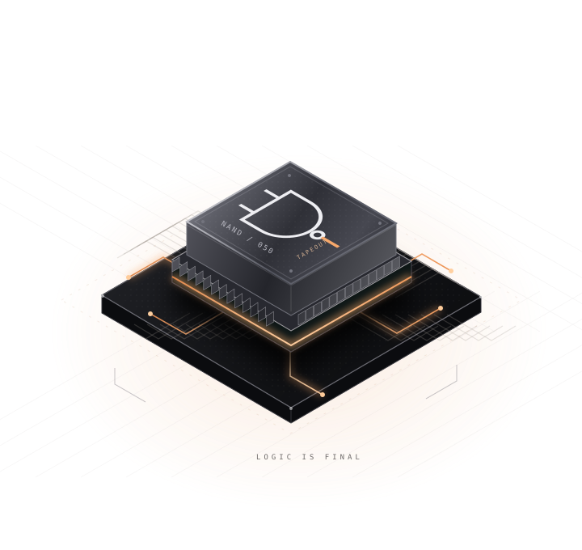

Agree. Then lock.
A milestone, a checklist, a deadline. Both sides know the rules before funds enter escrow.
A fair finish for freelance work. Lock the terms, deliver the work, let the circuit decide.
Read-only demo. No wallet. No signup.

The referee turns delivery evidence into a clear settlement. The rules are set before the work starts.
Delivery recorded, hash verified, checklist complete, and client acceptance signed.
A milestone, a checklist, a deadline. Both sides know the rules before funds enter escrow.
The delivery hash, checklist, timing, and signed acceptance become the facts the referee reads.
The circuit returns a verdict. The contract applies it. Anyone can replay the same inputs.
The five-input referee, circuit #51, and the production escrow are live on X Layer, and the first job has already been refereed and settled in full. TapeRelay delivery is next.
Public inputs. Public output. A permanent record on X Layer. Start with the proof circuit, then follow the transaction trail.
View the evidenceTwo switches. One real mainnet call.